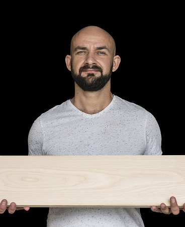

Target Audience
Description
The target audience of the website is primarily business owners and operators seeking to develop a professional relationship with the community of Sundance as well as other businesses.
Personas
Jack Andersen

- Job: Owner of Andersen Building Supply, LLC.
- Age: 45
- Education: Bachelor's in Business Management, 10 years experience in residential construction.
- Seeking to grow his buisness and possibly open up a second store location in a nearby town. Jack grew up in Sundance and the building supply store was originally owned and operated by his father. Prior to that, it had been owned and operated by another family at a different location in town.
- Jack has a vested interest in improving the economy in Sundance. Attracting other types of businesses will result in increased population, which means more homes to be built and more supplies sold from his store.
C. W. Parriman
- Job: CEO of Solavistas Energy, Inc.
- Age: 62
- Education: High school diploma.
- C. W. walked on to a coalmining job the day after he graduated high school in Southeastern Kentucky. It didn't take him long to work up the ranks and out of the mines to become a regional supervisor. C. W. was smart with his money, and eventually bought shares in a few oil operations that struck it big. Now he owns and leads his own energy company specializing in oil, natural gas, and wind power.
- C. W.'s company is one of a few corporations that is a major employer to residents of Sundance. Although C. W. doesn't live in Sundance, he understands his company has a significant impact on economy and commerce. C. W. loves to keep in touch with the communities that his business supports.
Scenarios
- How can I start a business in Sundance, WY?
- What opportunities are there for relocating my business to Sundance?
- How can the Chamber help me promote my business?
- What state/federal regulations does my business need to know about, and who is lobbying on my behalf?
- What is the economic outlook for Sundance for the next 20 years?
- Where is the best location for my new business?
- How can my business give back to the community?